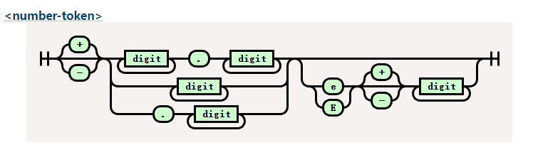

词法解析器开发
我们已经实现了 Range，Token。
这边我们直接进入正题，开始实现词法解析。
首先介绍一下词法解析起的运作流程了
由语法分析进行调用
获取token -> 是否匹配 --> 消费token
|
V
抛出异常
词法解析器的任务是找到一段文本中最小的文本结构，比如123 'abc' 分别是数字和字符串。
那么这些最小的文本结构，我们去哪找它的定义呢？
下面两个连接我们可以得到我们想要的。
Appendix G. Grammar of CSS 2.2
接下来开始我们的开发吧！
Lexer 结构与辅助功能
我们创建src/lexer.rs文件。
建立 lexer 的结构体
{{#include ../src/lexer.rs:lexer}}
这里有一个 rust 的新手常见的坑，或者说迷惑的地方，就是 String str &str 的关系，老实讲知道现在有时候我也很模糊。
我的理解如下
- str 是静态字符串，编译器存储在二进制文件中。
- String 属于动态字符串，存储在堆中。
- &str 是切片，或者说指针更好一些，他只是一个指向内存地址的指针
fn main() { let x = "i am str"; // "i am str" 这是str 存储在二进制中 // x 是指向 str 的指针，所以他的类型是 &str let y = String::from("string"); // 转化 y 到 &str let z = &y[..]; // z &str // z 是指向y的指针 }
这里的 chars 是 source_code 的切片，方便我们进行字符遍历。
后面我们会使用这个迭代器进行迭代，受益于 rust 的零成本抽象，他的性能非常高。
有了结构，接下来我们实现一些辅助函数，用来操作光标。
我们在某些场景下不仅仅需要感知当前字符，还需要感知下一个字符。
所以我们定义一下几个方法。
{{#include ../src/lexer.rs:handle_char}}
这段代码中存在几个问题，我们使用了关键字 pub 作为方法前缀，但是这些方法只对内使用，所以这是一个错误的用法。
第二，这部分我们应该使用缓存，存储上一次获得的结果，因为clone方法会影响性能。
// 思考：有没有什么更好的优化手段？
self.chars.clone().nth(0).map(|x| x.1)
{{#include ../src/lexer.rs:get_token}}
最后我们通过Lexer::new 创建 lexer 实例
{{#include ../src/lexer.rs:new}}
这里的advence相当开启了机器，词法解析器将不停的吞噬下一个字符，直到文本的最后。
接下来我们实现 lexer 的主要方法，Token 创建器。
为了限制篇幅，我只做 3 个介绍，剩下的大家可以看源码或者是课后作业，自行实现一遍，感受词法解析器的过程。
- 简单符号解析
'(' | ')' | ',' | ':' | ';' | '<' | '>' | '[' | '\\' | ']' | '{' | '}' | '=' => {
return self.parse_simple_symbol(ch)
}
//parse_simple_symbol
{{#include ../src/lexer.rs:parse_simple_symbol}}
首先我们通过 match 匹配当前字符串，这个语法就好像一个功能更加强大的switch语法,_=>{} 就相当于default。
最终返回，我们的元组结构体Token。
是不是很简单，接下来我们把难度提升一点，来实现Comment的解析。
- 解析 Comment
在 css 语法中只有一种注释，那就是/* */。
'/' => return self.try_comment(),
//try_comment
{{#include ../src/lexer.rs:try_comment}}
首先当当前字符匹配到/时候我们调用方法try_comment。
当下一个字符是*的时候，我们确认当前是一个注释，所以我们贪婪的获取下一个字符，指导遇见下一个*/。
如果下一个字符不是*时候，我们返回斜杠类型，这个 token 类型会在分析函数的时候使用比如calc(1px / 2px)。
实际上这里应该返回Option类型，但是如果全部都返回Option显得很繁琐，所以我这里就这报错了，Option提供两个枚举值，一个是Some<T>，一个是None，代表有值无值两种，从而比免了null的设计问题。
好的，限制我们开始渐入佳境，有没有感觉到，在这个案例中，通过if进行不同状态的匹配呢？
接下来，我们看一个更复杂的有限状态机数字类型。
- 数字类型解析
几乎所有的编程语言都拥有数字类型，实际上要写一个计算器的语法解析器也是十分复杂的。
我们来看下为什么数字类型这么复杂。

这是我们要实现的铁轨图。
digit 在 css 中比较简单代表0-9字符。
大家有兴趣可以看一下 lua 的数字类型的正则铁轨图十分复杂。
还记得我们在开头说的吗？词法解析器就是一个有限状态机的实现，所以虽然看起来很复杂，但是有了铁轨图的帮助，我们还是能顺利编写的。
ch if ch.is_ascii_digit() || ch == '.' || ch == '+' || ch == '-' => {
return self.parse_digit_token()
}
//try_digit
{{#include ../src/lexer.rs:try_digit}}
大家看最开始的匹配开始字符的语法，这是 match 守卫，可以在捕获变量后，添加一个 if 条件块进行进一步的确认。
首先，我们通过前瞻确认他到底是不是一个数字，如果不是我们就返回他的原始符号类型。
如果是我们便根据铁轨图的逻辑一步步吞噬 token，直到下一个 token 不在匹配。
测试我们的成果
接下来开始测试我们写的成果。
我们在测试目录tests下创建test_lexer.rs。
创建 mod
#[cfg(test)]
mod test_lexer {
}
为了方便测试我们使用宏来减少自己的模板代码。
//test_lexer
{{#include ../tests/test_lexer.rs:test_token}}
这段代码中，创建了lexer的实例，然后消费一个 token，最后检测消费的 token 是否是我们想要的类型。
//test_simple_symbol
{{#include ../tests/test_lexer.rs:lexer_test_example}}
好的，我们看我们的测试代码变得十分精简，这都是得益于 rust 的宏魔法。
最后我们来运行测试一下cargo test lexer。
running 21 tests
test test_lexer::test_all_match_token ... ok
test test_lexer::test_at_token ... ok
test test_lexer::test_complexe_url_token ... ok
大公告成，我们已经完成了我们的词法解析器啦，当然还有很多没有完成的词法，需要你自行探索有，代码最开始写的有问题也不要灰心哦，不断的实践才能让理论知识更加熟练，加油吧少年。
在下一部分，我们将会实现我们的语法解析部分，会涉及 ast 语法树哦，敬请期待。